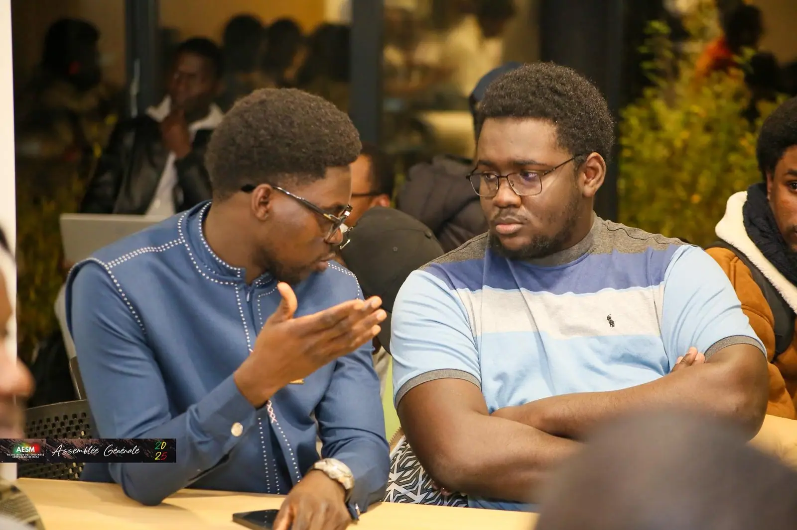

Assemblée générale 2025 : passation et nouveau bureau
Bilan du mandat 2024-2025 et élection d'Oumar Ka Thiam à la présidence.
Lire l'articleSolidarité
Personne, à Dakar, ne prépare vraiment sa valise en pensant à un hiver lorrain. On emporte des vêtements légers, peut-être un pull par précaution, et on découvre en novembre ce que veut dire un froid qui s'installe pour plusieurs mois. C'est ce décalage très concret que la collecte de vêtements d'hiver essaie de combler.
À partir du 26 septembre 2025, l'AESM a lancé, avec l'ASM — l'Association des Sénégalais de la Moselle —, un appel à dons de manteaux, pulls, chaussures et écharpes. Le principe est simple : ceux qui ont des vêtements chauds en trop, ou qui n'en ont plus l'usage, les donnent ; l'association les redistribue à ceux qui en ont besoin, en priorité les étudiants arrivés depuis peu et qui n'ont pas encore eu le temps ou les moyens de s'équiper.
Ce n'est pas la première fois que l'AESM organise ce type de collecte : une opération similaire avait déjà eu lieu durant l'année 2023-2024. Ce n'est donc pas une improvisation, mais quelque chose qui commence à s'installer comme un rendez-vous récurrent de la rentrée.

Les vêtements rassemblés au fil des semaines ont été distribués le 2 novembre, à l'occasion de l'assemblée générale de l'AESM. Le choix de la date n'avait rien d'accidentel : c'était l'occasion de réunir un maximum de monde le même jour, entre le vote du nouveau bureau et un geste concret pour ceux qui en avaient besoin avant que le froid ne s'installe vraiment.
Le partenariat avec l'ASM donne à cette collecte une portée qui dépasse le seul cercle étudiant : l'association réunit des Sénégalais de la Moselle de toutes générations, ce qui élargit à la fois les donateurs potentiels et les personnes qui peuvent en bénéficier.
Ce genre de collecte fonctionne uniquement parce que des gens acceptent de vider un placard. Si vous avez des vêtements d'hiver en bon état dont vous ne vous servez plus, écrivez-nous — la prochaine collecte se prépare déjà, et chaque contribution compte pour un étudiant qui découvre son premier hiver loin de Dakar.
À lire aussi
Bilan du mandat 2024-2025 et élection d'Oumar Ka Thiam à la présidence.
Lire l'article
Logement, CAF, préfecture, banque, inscription : l'ordre dans lequel s'y prendre.
Lire l'article